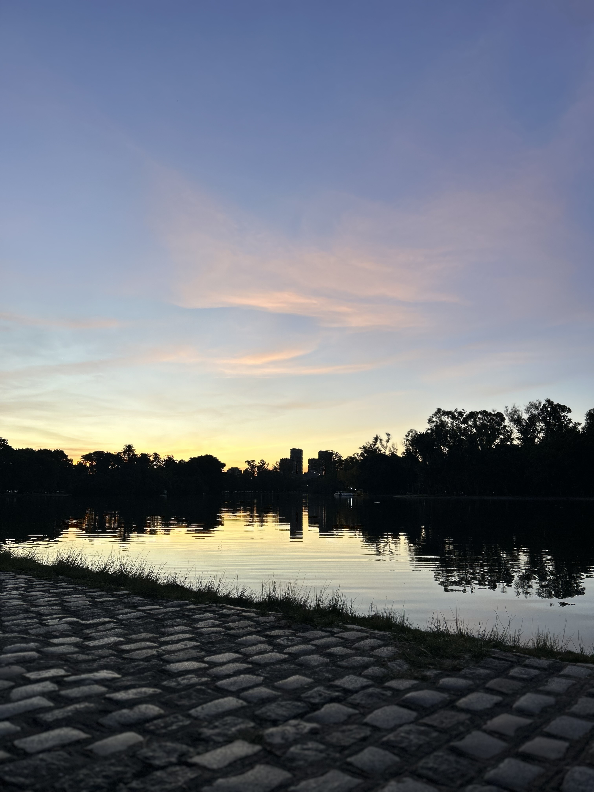

Lago de Regatas
Ubicado en los Bosques de Palermo, el Lago de Regatas es uno de los circuitos más utilizados por corredores de todos los niveles. Su recorrido bordea completamente el lago y cuenta con aproximadamente 2 km por vuelta, ideal para sumar kilómetros de manera cómoda y sin interrupciones.
Además de ser un punto clásico para entrenar, es uno de los lugares más lindos de la ciudad para pasar la tarde, con amplios espacios verdes, vistas al agua y una gran presencia de personas realizando actividad física durante todo el día.
Distancia aproximada: 2 km por vuelta.
Mejor horario: Durante la mañana suele haber menos circulacion; por la tarde es cuuando se concentra la mayor cantidad de corredores y visitantes.

